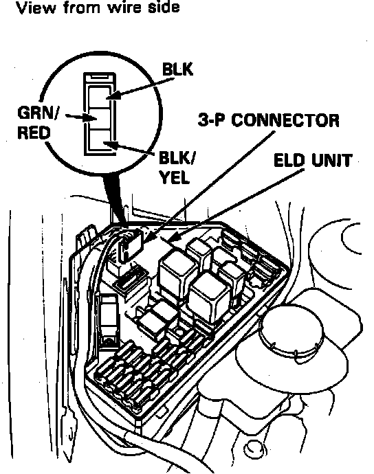

Electric Load Sensor: Testing and Inspection
Fig. 19 ELD 3-pin Connector:

1. Ensure alternator belt is properly adjusted and that all electrical connections are secure and free from corrosion. Check underdash fuse No. 2.
2. Open under hood fuse box lid, then disconnect 3-pin connector from ELD unit, Fig. 19.
3. Turn ignition switch On, then connect voltmeter positive lead to black/yellow terminal and negative lead to black terminal. Observe voltmeter and ensure battery voltage exists.
4. If no voltage exists, check for a blown No. 2 fuse in dash fuse box, an open in the black/yellow wire between dash fuse box and main fuse box, or a poor ground connection.
5. If battery voltage exists, with ignition switch On, check voltage between green/red terminal and ground. Voltage should be approximately .5 volts. If voltage is not within specified limits, replace relay box.
6. If voltage is as specified, system is operating correctly.